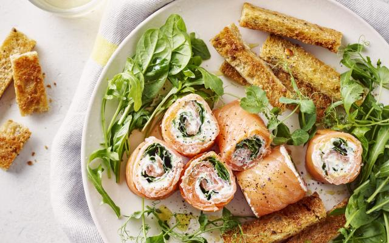

Zalmrolletjes met kruidenkaas en broodsoldaatjes

Ingrediënten
- 300 g gerookte zalm
- 150 g kruidenkaas
- 2 sneden brood (dik gesneden)
- 100 g basilicum
- 100 g spinazie
- 100 g rucola
- 1 handje cress
- 3 el room
- boter
- peper
- zout
Bereiding
- Roer de kruidenkaas los met de room.
-
Leg de plakjes zalm dakpansgewijs naast elkaar zodat je een plak van
ongeveer 25 op 25 cm hebt. Bestrijk de zalm met de kruidenkaas. Verdeel
er wat blaadjes spinazie en basilicum over, kruid met peper en rol op.
Wikkel de rol in vershoudfolie en leg minstens 1 uur in de koelkast.
-
Snij het brood in reepjes en bak ze rondom goudbruin in boter. Kruid ze
met peper en zout.
-
Verwijder de vershoudfolie van de zalmrol. Snij de rol in stukken van
ongeveer 4 cm en schik ze samen met de broodsoldaatjes op een
serveerschaal. Werk ze af met de rest van de spinazie, de rucola en de
cress. Druppel er nog wat olijfolie over en kruid met peper.
origineel recept te vinden op de volgende link:
website Libelle lekker